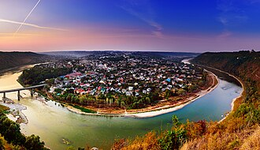

Заліщики + Джуринський водоспад

Загальна відстань: 320–380 км
Час: 12–14 годин
- Панорама Заліщиків
- Джуринський водоспад
- Червоногородський замок
Плюси:
Один із найкрасивіших пейзажів України.
Водоспад і руїни замку в одному місці.
🚗 Прокласти маршрут у Google Maps